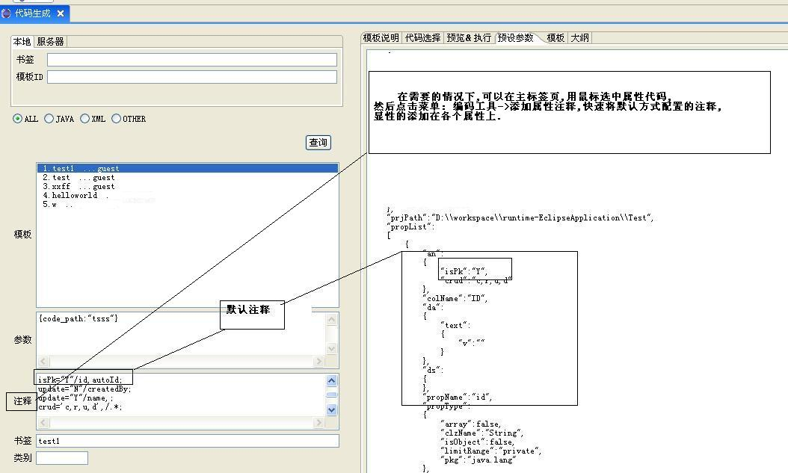
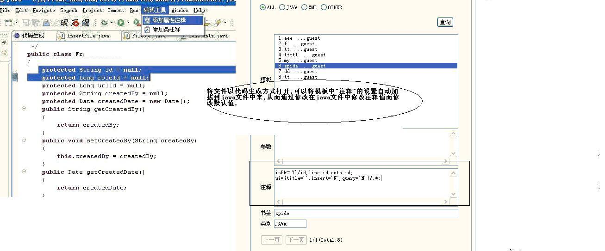

数据: 预设参数 + 用户自定义参数 + 配置参数

预设参数
预设参数由插件自动解析.java文件而得来.
解析原理:

内置参数
checkedList: 一个字符串数组,值为代码选择器所选中接点的key, 在模板中依照该值来确定是否要生成相关代码.
config:该对象存放了一些系统常量:如 ${config.userId}读取的是用户注册的用户id.
注释:
通过注释方式来定义元数据模型.
默认注释配置:
eg:
isPk="Y"/id,lineId;表示名称为id,lineId的属性会默认添加了该注释.

修改默认注释
有时候对象的属性设置上可能不是按照注释来设置,可以通过如下方式修改.

注释同样支持ftl语法,可以通过ftl遍历各个属性.同模板写法.